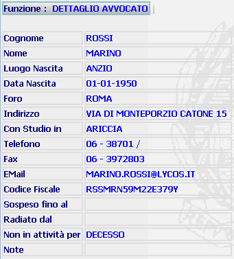

GENERALITA'
DETTAGLIO AVVOCATO: La funzione, consente di visualizzare i dati riepilogativi di un avvocato dopo avere effettuato un operazione di modifica de difensore.
LE MASCHERE VIDEO
La funzione in esame viene realizzata attraverso l'utilizzo della seguente maschera che riporta gli elementi descrittivi dell'avvocato:

COME FARE PER ...
Per eseguire una qualsiasi altra funzione occorre selezionarla tramite il Menu Verticale oppure attraverso gli Hyperlink posti nell'area di navigazione.
PULSANTI
Sono presenti i soli pulsanti orizzontali dell'area di navigazione.